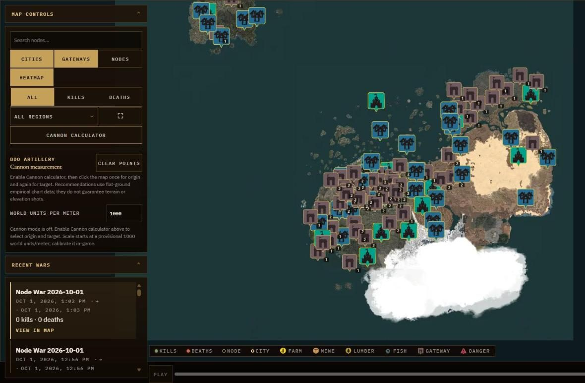
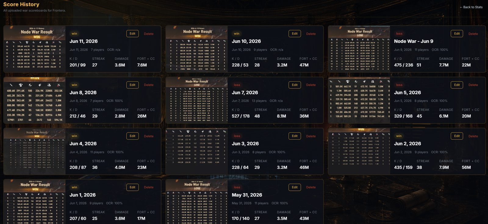
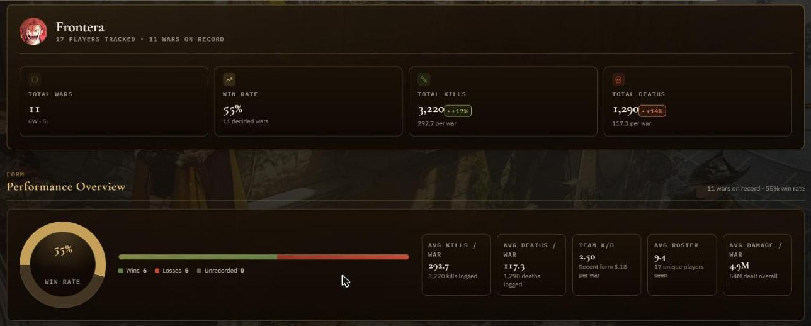
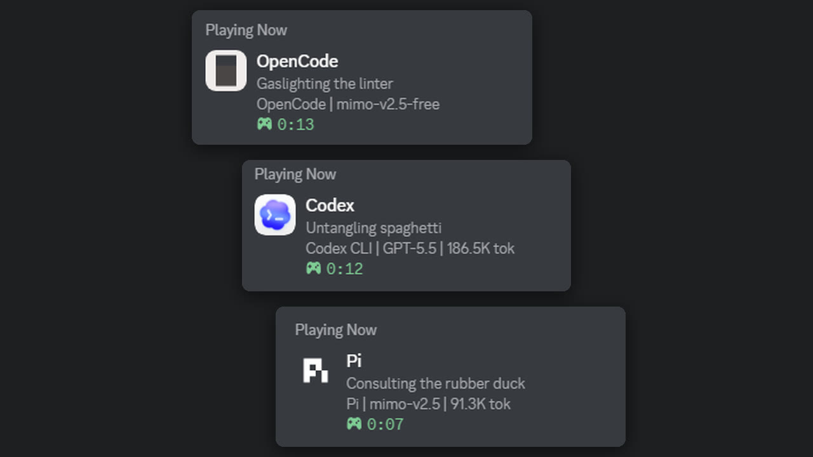
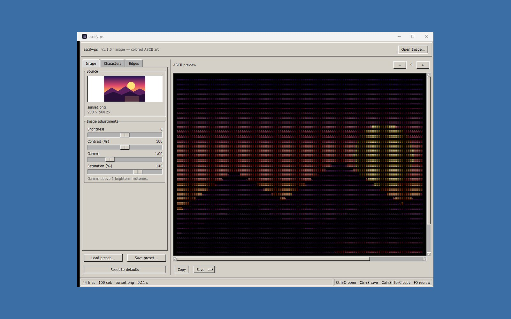

Projects
Project Athena
Discord bot and dashboard that runs guild events, rosters and stats.
TypeScript · Node.js · Supabase · Live
Live war map
Scoreboard OCR
Player statsRelicore
Guess where and when museum artifacts were made.
Next.js · MapLibre · LiveI build small, complete tools, then test them like a QA engineer would.
- TypeScript
- Next.js
- Node.js
- Supabase
- Rust
- Python

AgentPresence
Your AI coding agent as your Discord status.
Rust
asciify-ps
Images to coloured ASCII art, Windows 2000 style.
Python · Tkinter